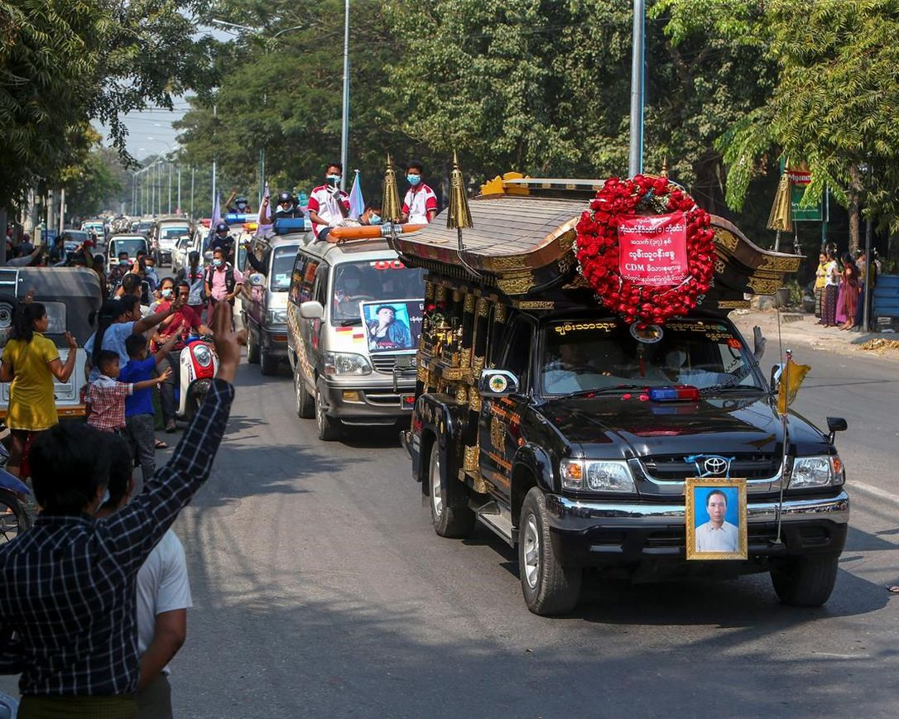
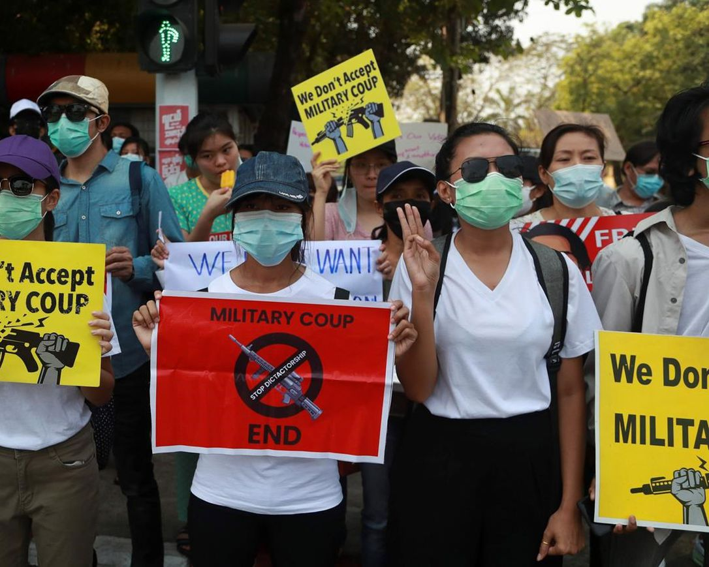

places you must visit
 TamilNadu
TamilNadu
this is a really good school.
Established in 1993, the Canadian Tamil Academy (CTA) prides itself in being a pioneer organization in preserving and cultivating the beauty of the Tamil language, literature, culture and history within the diaspora community. CTA’s mission is to educate and empower upcoming generations of Canadian Tamils to connect with their language and identity. The CTA strives to achieve its mandate through various programs catered to enrich knowledge and engagement with the Tamil language, literature, culture and history.
Reviews on Movies

It was a movie full of exitement
This is a must watch movie. I liked it when Ben finnaly found the true power in the omnitrix.
about enviornment
-
More Myanmar protests follow strike amid foreign concerns
updateArticle was updated 11 hrs ago YANGON, Myanmar - Protesters against the military’s seizure of power in Myanmar were back on the streets of cities and towns on Tuesday, a day after a general strike shuttered shops and brought huge numbers out to demonstrate. In Mandalay, the country’s second-biggest city, a funeral was held for 37-year-old Thet Naing Win, one of two protesters shot dead by security forces on Saturday. He and a teenage boy were killed when police and soldiers opened fire on a crowd that had gathered to support dock workers whom the authorities were trying to force to work. They have been on strike, as have many civil servants and state enterprise workers, as part of a nationwide civil obedience movement against the Feb. 1 military takeover. Numbers were down from Monday’s massive crowds, but groups of demonstrators in Yangon, the country’s biggest city, assembled again at various venues on Tuesday for peaceful protests. Protesters trained their ire on a new target Tuesday, gathering outside the Indonesian Embassy in response to a news report that Jakarta was proposing to its regional neighbours that they offer qualified support for the junta’s plan for a new election next year. The demonstrators demand that the results of last year’s election, won in a landslide by Aung San Suu Kyi’s National League for Democracy party, to be honoured. The protesters chanted slogans against the military coup and held banners, one of which read “Friend or Enemy. You choose, Indonesia.” “What I hope, as a citizen of Myanmar, is to stand with the truth. We can’t wait one year,” said one demonstrator, Han Ni. The report by an international news agency, published Monday, triggered dismay among supporters of the protest movement. It said Indonesia was seeking to have fellow members of the Association of Southeast Asian Nations agree on an action plan to hold the junta to its promise to hold free and fair elections in a year’s time.
-
Indonesian Foreign Ministry spokesperson Teuku Faizasyah denied the report, saying Tuesday that it “is not Indonesia’s position at all to support a new election in Myanmar.” He said Indonesian Foreign Minister Retno Marsudi was gathering the views of fellow ASEAN members ahead of a special meeting it hopes will be held on the situation in Myanmar. Myanmar’s military says it took power because last November’s election was marked by widespread voting irregularities, an assertion that was refuted by the state election commission, whose members have since been replaced by the ruling junta. The junta has said it will rule for a year under a state of emergency and then hold new polls. Suu Kyi’s party would have been installed for a second five-year term, but the army blocked Parliament from convening and detained her, President Win Myint and other top members of her government. There is continuing international concern over Myanmar, with foreign ministers from the Group of Seven nations on Tuesday issuing their second statement since the coup. The group, consisting of Canada, France, Germany, Italy, Japan, the United Kingdom, the United States and the European Union, condemned violence committed by Myanmar’s security forces and demanded they act with restraint according to international standards for human rights.